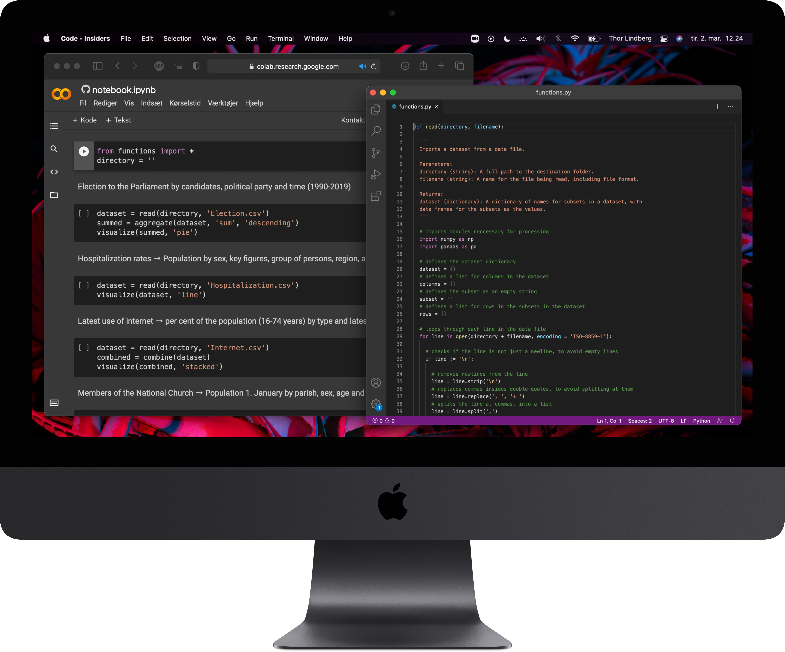

Danmarks Statistisk (Denmark's Statistics) provides a large amount of datasets for various measurements on the Danish population.
Based on Python, this series of functions reads a dataset of an applicable structure, and provides several options for statistical analysis.
Analyzed datasets can be visualized as plots, by selecting a visualization option during analysis.
Visualizing statistics,
with the power of Python

with the power of Python
Individual course
at Copenhagen University


Python code
functions.py
Jupyter code
notebook.ipynb